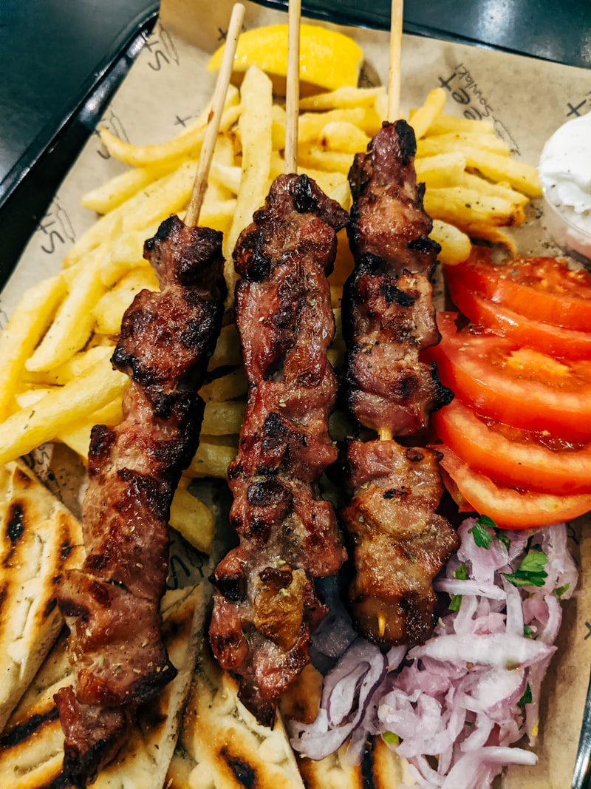
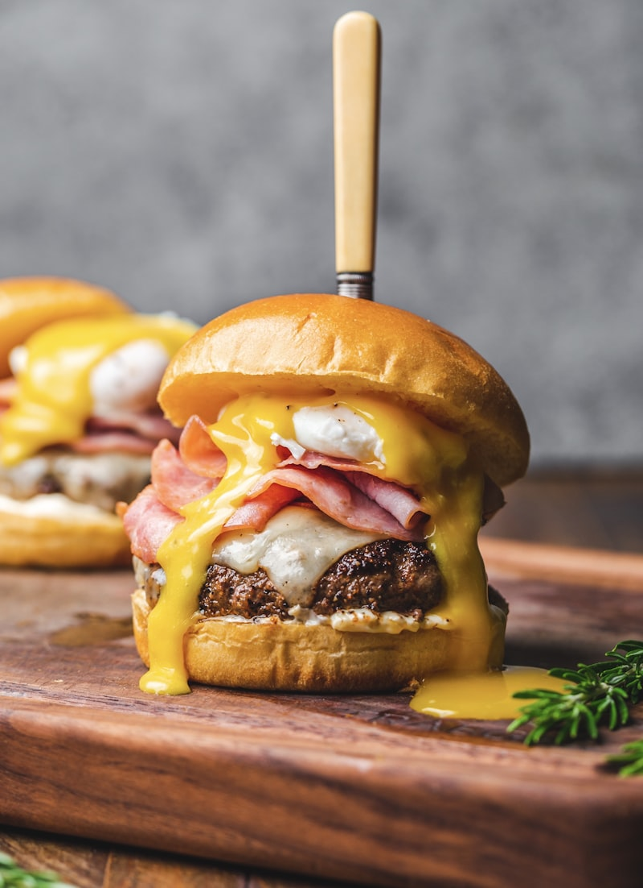
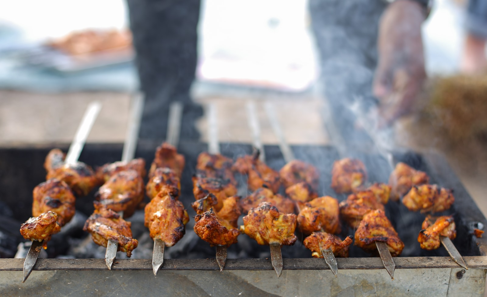
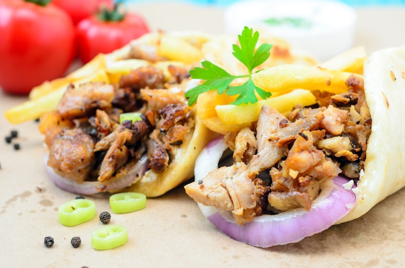

Premium döner kebabs crafted with fresh ingredients, handmade bread, and bold signature sauces. A true taste of European street food — now at Independence Center.


About Us
Tasty German Döner brings the bold, satisfying flavors of authentic German-style döner kebab to Independence, Missouri. Every kebab is built on premium lean meats — beef, chicken, or mixed — served in freshly baked bread with crisp vegetables and our signature sauces.
This is not fast food. This is a tradition. Döner kebab has been feeding cities across Europe for decades — and now Independence Center has its own. Fresh. Bold. Tasty.
Fresh Every Day


Why Tasty German Döner
When to Visit
| Monday – Saturday | 10:00 AM – 8:00 PM |
| Sunday | 11:00 AM – 6:00 PM |
Hours follow Independence Center mall schedule.
Find Us